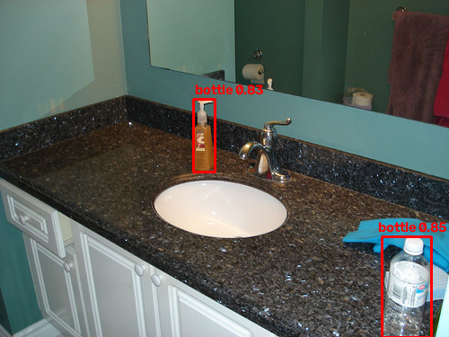
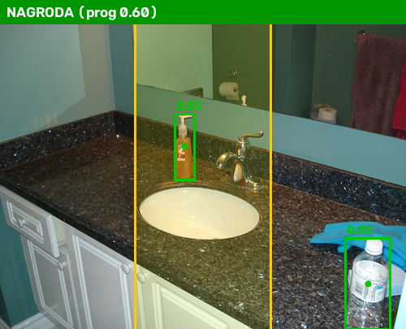

Warsztat 3 · Sztuczna inteligencja w grach i rozszerzonej rzeczywistości
YOLO jako czujnik
w minigrze
Czyli kiedy gra powinna uwierzyć sieci neuronowej?
Warsztat 3 · Sztuczna inteligencja w grach i rozszerzonej rzeczywistości
Czyli kiedy gra powinna uwierzyć sieci neuronowej?
Autorzy: Mariusz Wątroba, Wojciech Ochman, Filip Opacki, Stanisław Kardasz
Minigra: pokaż butelkę w oznaczonej strefie obrazu, a odblokujesz nagrodę.
12 gotowych obrazów
klasa, ramka, ufność
Wasz kod
nagroda lub brak nagrody
Cel: połączyć wynik sieci z regułą gry i sprawdzić, jak próg ufności wpływa na błędne decyzje.
2
Model: yolo11n, 80 klas zbioru COCO
| Pojęcie | Co oznacza |
|---|---|
| klasa | co to jest: bottle |
| ramka | gdzie to jest, w pikselach: x1, y1, x2, y2 |
| ufność | jak pewny jest model, od 0 do 1: 0.83 |
Ufność to nie prawdopodobieństwo poprawności, tylko sygnał, który porównujemy z wybranym progiem.
Strefa: środkowa 1/3 szerokości obrazu, na całej wysokości.
Nagroda, gdy co najmniej jedna butelka spełnia oba warunki:
Jedno zdjęcie daje najwyżej jedną nagrodę.

Zielona ramka przekracza próg, pomarańczowa nie.
Decyzję gry porównujemy z etykietą referencyjną każdego zdjęcia:
| gra dała nagrodę | gra odmówiła | |
|---|---|---|
| etykieta: nagroda | poprawna nagroda | pominięta nagroda |
| etykieta: brak nagrody | błędna nagroda | poprawna odmowa |
Do sprawdzenia: skąd bierze się każda pomyłka? Brak detekcji, niepoprawna lokalizacja lub klasa, czy sama reguła gry?
Do przemyślenia: co bardziej szkodzi grze, nagroda bez powodu czy brak nagrody za poprawną akcję?
5| Plik | Co zawiera |
|---|---|
warsztat3.ipynb | notatnik z TODO |
data/ | 12 zdjęć i etykiety |
yolo11n.pt | gotowy model |
yolo_utils.py | funkcje pomocnicze |
sprawdz_srodowisko.py | test instalacji |
kamera.py | rozszerzenie |
README.md, requirements.txt | uruchomienie i wersje |
sprawozdanie_szablon.md | pusty szablon |
python -m venv .venvpython -m pip install -r requirements.txtpython sprawdz_srodowisko.pypython -m notebookNa Linuksie najpierw PyTorch na CPU, zgodnie z README.
Role, sprawozdanie, ręczna ocena 2 zdjęć
Model, odczyt ramek, wyznaczenie strefy
Środek ramki, warunek strefy, decyzja o nagrodzie
12 zdjęć, 2 progi, przyczyny pomyłek
Wnioski i wysyłka na Teams
Sprawozdanie uzupełniacie w trakcie ćwiczenia, nie dopiero pod koniec.
Skończyliście wcześniej? Otwórzcie kamera.py: punkt po 3 kolejnych klatkach, następny po opuszczeniu strefy.
Powodzenia!
8